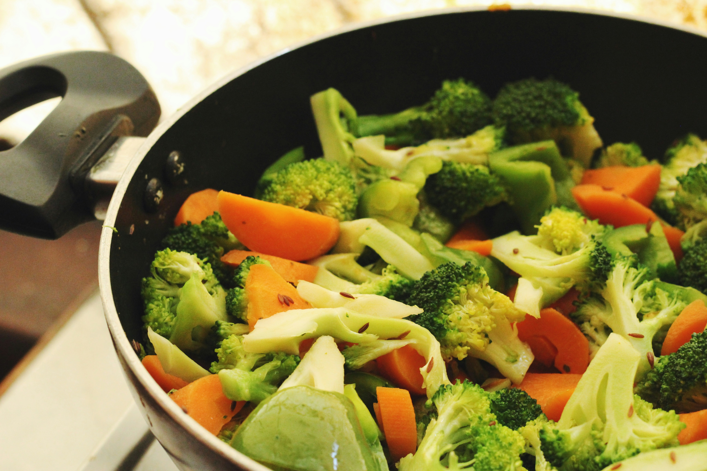
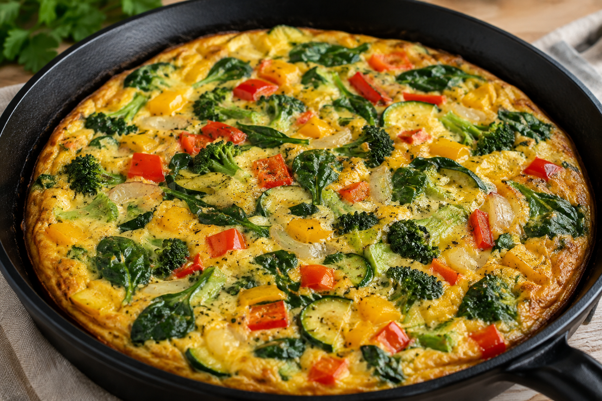

When you grow your own food to save money, letting crops spoil is like throwing cash away. If your greens are growing faster than you can eat them, scald them in boiling water for a minute, cool them down, and freeze them. For extra herbs, hang them upside down in a dry room for two weeks, then store them in recycled jars for free seasoning.
Cooking to Beat Inflation

The real way to save money is to create your meals around your garden. Instead of using your fresh vegetables as a side dish, make it the main event. Use the following as a guideline to keep your meals filling, healthy, and cheap:
Protein, such as eggs from backyard setups
Vegetables, focusing on your fresh leafy greens and continuous-yield crops
Root crops, like home-grown sweet potatoes or carrots
Healthy fats, using simple local cooking oils
By pairing these fresh harvests directly with low-cost ingredients like rice or noodles, you can create a nutritional dinner for just a few pesos per serving.
Chosen One Meal

Garden Frittata Ingredients:
3 large eggs
1 cup freshly picked spinach or native green leaves
1 medium tomato, diced
1 clove garlic, minced
1 tsp cooking oil
A pinch of salt and pepper
Instructions: Whisk the eggs in a bowl with salt and pepper. Heat oil in a pan over medium heat, then sauté the garlic, tomatoes, and greens until soft. Pour the whisked eggs directly over the vegetables. Cook for 3–4 minutes until the bottom is set, then flip or cover with a lid until cooked through.
(Note: For our other two easy backyard dishes—Green Leaf Pesto over noodles and Pan-Seared Root Medley—check out our step-by-step video guides!)